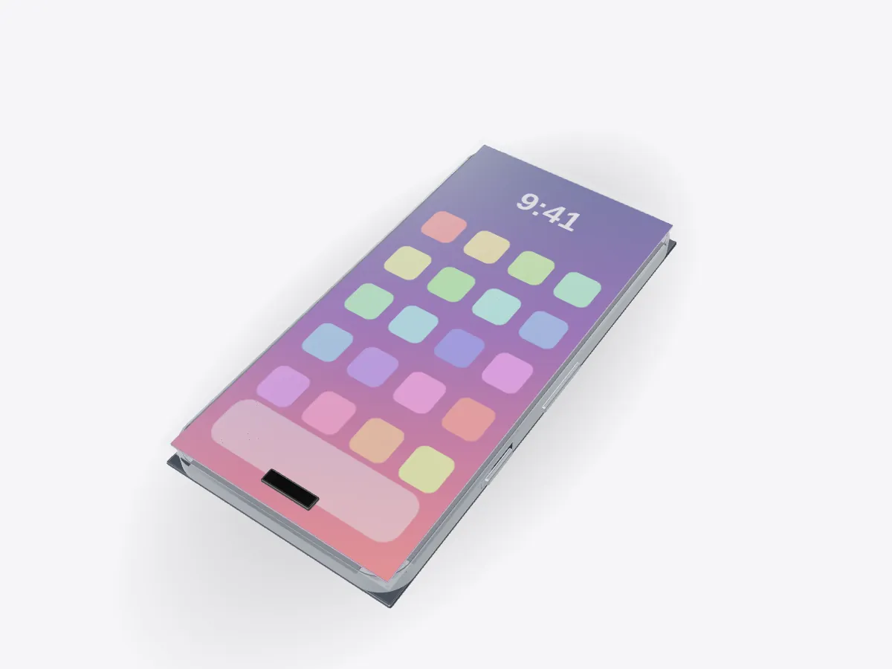

01 / 05
Overview
12 parts, one idea.
Open a smartphone in 3D: display, battery, logic board, cameras, seals and wireless charging coil. Peel it layer by layer and see how water resistance works.
Drag to orbit, pinch or scroll to zoom, tap any part.
How it works · Tech
A slab of glass and metal hiding a battery, a computer, a camera system and a radio for every band. Peel it apart one layer at a time.

Scores are saved on this device only.
01 / 05
Overview
Open a smartphone in 3D: display, battery, logic board, cameras, seals and wireless charging coil. Peel it layer by layer and see how water resistance works.
Drag to orbit, pinch or scroll to zoom, tap any part.
02 / 05
Explode
Keep scrolling and every part slides away from the centre, so you can see how they fit together.
03 / 05
Slice
A section plane sweeps through the model as you scroll. Pick an axis and set the depth yourself.
04 / 05
Parts
Pick a part or tap a glowing dot. It lights up and everything else fades back.
05 / 05
Facts
6 = dust-tight, 8 = protected against continuous immersion in water.
The lithium-ion battery won the Nobel Prize in Chemistry.
Swapping sodium ions for larger potassium ions toughens the glass.
Explained
Open up a modern phone and most of the space is battery. The rest is a carefully layered sandwich. At the front is the cover glass with its touch sensor. Below it is the display, then the frame, which holds the logic board, cameras, speakers and haptic motor. At the back are the wireless charging coil and the back glass. This model is generic and unbranded, but the layout is typical.
The logic board is the phone's computer. To save space, many phones stack two boards on top of each other, with the processor, memory, storage and modems spread across both. The main chip combines the CPU, the graphics processor and dedicated circuits for photos and machine learning on one piece of silicon. Thin flex cables join it to the display, cameras and buttons.
The cover glass gets its strength from chemistry. The finished glass is soaked in a bath of molten potassium salt, and larger potassium ions swap places with smaller sodium ions near the surface. They squeeze into the surface, putting it into compression, so a crack has to overcome that squeeze before it can grow. A grid of transparent electrodes under the glass senses the small change in capacitance when your finger comes close.
Most flagship phones use OLED displays, where each pixel is a tiny light-emitting diode that makes its own light. That is why the blacks look truly black: those pixels are simply off. The display connects to the board through a folded flex cable.
Water resistance comes from seals, not magic. An adhesive gasket bonds the glass to the frame all the way round, the buttons have rubber rings, and the speaker and microphone openings are covered by fine meshes. Ratings like IP68 come from a standard code: the first digit is protection against dust, the second against water. Try the water test in Play mode to see the seals light up.
The battery is a lithium-ion pouch cell, the technology that earned John Goodenough, Stanley Whittingham and Akira Yoshino the 2019 Nobel Prize in Chemistry. Wireless charging works by magnetic induction: a coil in the charger makes a changing magnetic field, and the coil in the phone turns it back into current. That's why the back is glass rather than metal. Open the layers one by one in Play to see the order a repair technician would follow.
D3DDD
D3DDD makes them: product cutaways, exploded views, architectural renders and technical drawings.